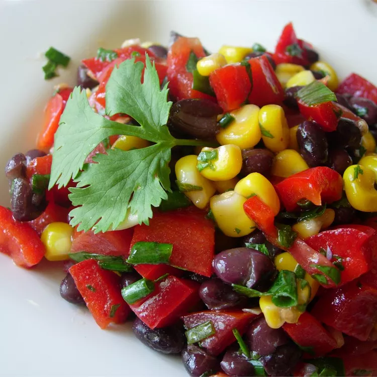

Black Bean and Corn Salad

Description
This black bean and corn salad is very colorful and includes a delicious lime and garlic dressing.
A super easy, great side dish.
Ingredients
- 1/2 cup olive oil
- 1/3 cup fresh lime juice
- 1 clove garlic, minced
- 1 teaspoon salt
- 1/8 teaspoon ground cayenne pepper
- 2 (15 ounce) cans black beans, rinsed and drained
- 1 1/2 cups frozen corn kernels
- 1 avocado - peeled, pitted and diced
- 1 red bell pepper, chopped
- 2 tomatoes, chopped
- 6 green onions, thinly sliced
- 1/2 cup chopped fresh cilantro
Steps
- Place olive oil, lime juice, garlic, salt, and cayenne pepper in a small jar. Close the lid tightly and shake the jar until the dressing is well combined.
- Combine in a salad bowl beans, corn, avocado, bell pepper, tomatoes, green onions, and cilantro.
- Shake dressing again, pour over salad, and toss to coat.